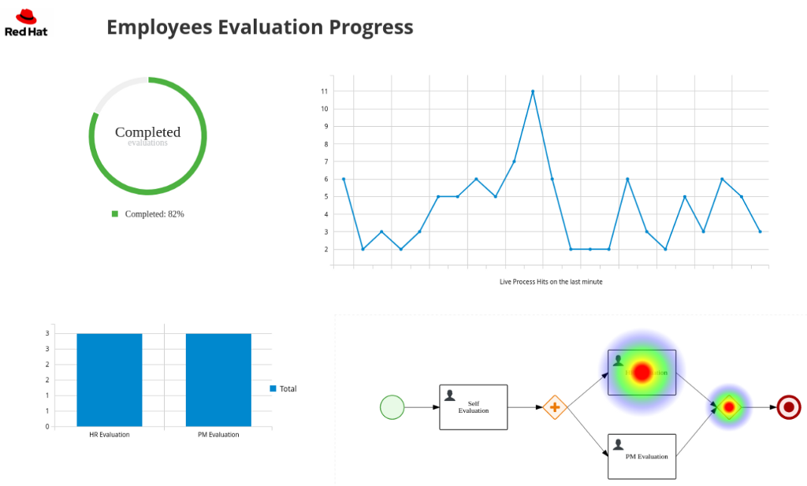
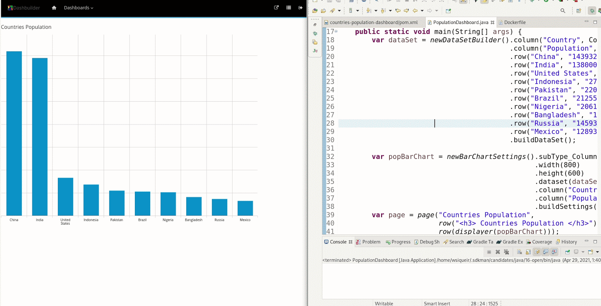

DashBuilder is a great tool to author dashboards that can consume and display data from many sources, i.e. Prometheus, JDBC, Kie Server, and others. These dashboards can be later exported to a ZIP file and then be executed on DashBuilder Runtime.

Dashboard built with DashBuilder
Recently, we added a new alternative to create those dashboards: a pure Java API. The Java API exposes our existing builders and factories for data sets and visual components, but it also brings a new set of components for pages and navigation.
In this post, we will introduce the DashBuilder Java DSL (Domain Specific Language) API and teach you how to get started with it.
Dashbuider DSL API
The API has 5 main core components. Let’s take a look at those:
Data Sets
The API for data sets has as entry point the class org.dashbuilder.dataset.def.DataSetDefFactory which allows you to create your own data set definition. You can also pure Java data set using the class DataSetFactory, for example:
It is also possible to build data sets from multiple sources, such as CSV, Prometheus, SQL, and many others. It is important to notice that the same data set can have a different representation using lookups, which can be understood as data sets transformation requests. We will explore this later.
Components
Components can be used in a dashboard page to display a data set or static information. The entry point to create components is the class org.dashbuilder.dsl.factory.component.ComponentFactory.
From there you can refer to components in your local file system or build displayers components. For “displayer” components notice that we need a factory to build the settings, the factory is class: org.dashbuilder.displayer.DisplayerSettingsFactory, where you can build the settings for your displayer. Bear in mind that all classes that use a displayer will require a data set to be built, otherwise, an exception will be thrown when exporting the dashboard;
Page
You can build pages composed of the components mentioned in 2. Pages have rows that can have columns and finally components. Using the class org.dashbuilder.dsl.factory.page.PageFactory allow make it easy for you to create any page component;
Navigation
You can create the pages navigation using org.dashbuilder.dsl.factory.navigation.NavigationFactory. This class can be used to define the menu of pages that will be displayed in DashBuilder Runtime;
Dashboard
This is the class that glues everything. It can be created using org.dashbuilder.dsl.factory.dashboard.DashboardFactory.
Note: All these classes have builders that can be used instead of the factory
Finally, when the work is done you can export the dashboard using the class org.dashbuilder.dsl.serialization.DashboardExporter.
Hello World Dashboard
Let’s now, create a Hello world using our API:
Requirements
Java 11+
Maven
Docker or podman
Steps
Create a maven project in your favorite IDE or use the following command:
Create the class PopulationDashboard.java in package org.kie.dashbuilder with the content as seen below; It creates a dashboard and exports it to a ZIP file.
package org.kie.dashbuilder;
import org.dashbuilder.dataset.ColumnType;
import org.dashbuilder.dsl.serialization.DashboardExporter;
import org.dashbuilder.dsl.serialization.DashboardExporter.ExportType;
import static java.util.Arrays.asList;
import static org.dashbuilder.dataset.DataSetFactory.newDataSetBuilder;
import static org.dashbuilder.displayer.DisplayerSettingsFactory.newBarChartSettings;
import static org.dashbuilder.dsl.factory.component.ComponentFactory.displayer;
import static org.dashbuilder.dsl.factory.dashboard.DashboardFactory.dashboard;
import static org.dashbuilder.dsl.factory.page.PageFactory.page;
import static org.dashbuilder.dsl.factory.page.PageFactory.row;
public class PopulationDashboard {
public static void main(String[] args) {
// creates a data set with pure Java code - external sources can be used as well
var dataSet = newDataSetBuilder().column("Country", ColumnType.LABEL)
.column("Population", ColumnType.NUMBER)
.row("China", "1439323776")
.row("India", "1380004385")
.row("United States", "331002651")
.row("Indonesia", "273523615")
.row("Pakistan", "220892340")
.row("Brazil", "212559417")
.row("Nigeria", "206139589")
.row("Bangladesh", "164689383")
.row("Russia", "145934462")
.row("Mexico", "128932753")
.buildDataSet();
// a bar chart configuration that is used to visualize the data set
var popBarChart = newBarChartSettings().subType_Column()
.width(800)
.height(600)
.dataset(dataSet)
.column("Country")
.column("Population")
.buildSettings();
// a page with a HTML header and the displayer that uses the bar chart configuration
var page = page("Countries Population",
row("<h3> Countries Population</h3>"),
row(displayer(popBarChart)));
// finally exports the dashboard to a local ZIP file
DashboardExporter.get().export(dashboard(asList(page)),
"population.zip",
ExportType.ZIP);
}
}
On the project root, create the following directory structure. Notice that dashboards are a directory.
FROM quay.io/wsiqueir/dashbuilder-runtime:latest
# adds default admin user
RUN /opt/jboss/wildfly/bin/add-user.sh -a -u 'admin' -p 'admin' -g 'admin'
ENV LANG en_US.UTF-8
# run as root to avoid file permission issues
USER root
CMD ["/opt/jboss/wildfly/bin/standalone.sh", "-b", "0.0.0.0", "-Ddashbuilder.runtime.multi=true", "-Ddashbuilder.dev=true", "-Dfile.encoding=UTF-8" ]
This is how the project structure should look like:
Run PopulationDashboard.java in your IDE or using the command mvn clean install exec:java. After it runs the file population.zip is generated in dashbuilder-runtime/dashboards directory. This is the Dashboard you created: To visualize the dashboard you must:
Build the image. Inside dashbuilder-runtime directory build the image using the following docker/podman command
docker build -t dashbuilder-dev .
It will download DashBuilder runtime, so it may take a while. You must run this command once.
Then run the image:
docker run -dp 8080:8080 -v ./dashboards:/tmp/dashbuilder/models:z dashbuilder-dev
Once it is running you can access localhost:8080 and login as admin/admin. Every time you run PopulationDashboard Java class, the dashboard will be automatically updated.

When the work is done, you can use the generated ZIP in production by using Dashbuilder Runtime in Static mode with the provided ZIP.
Conclusion
In this post, we introduced the Java API to create dashboards for Dashbuilder. In the next post, we will introduce other data set types and data set lookup, so stay tuned!